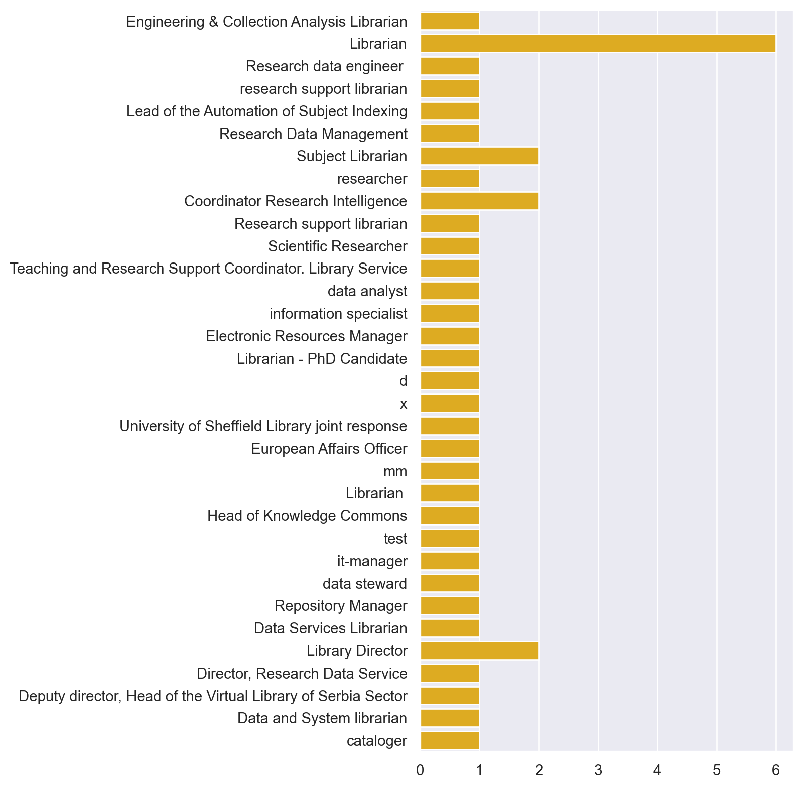
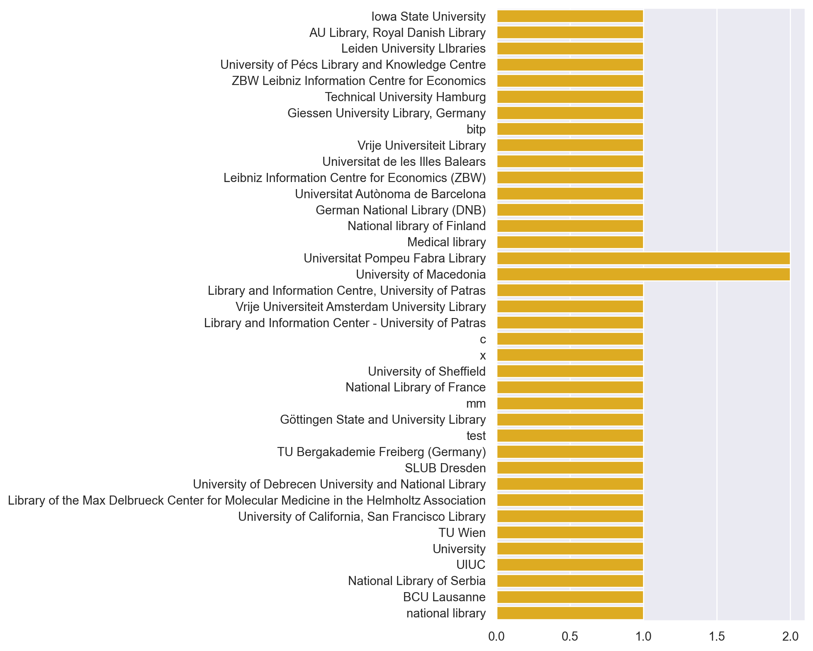
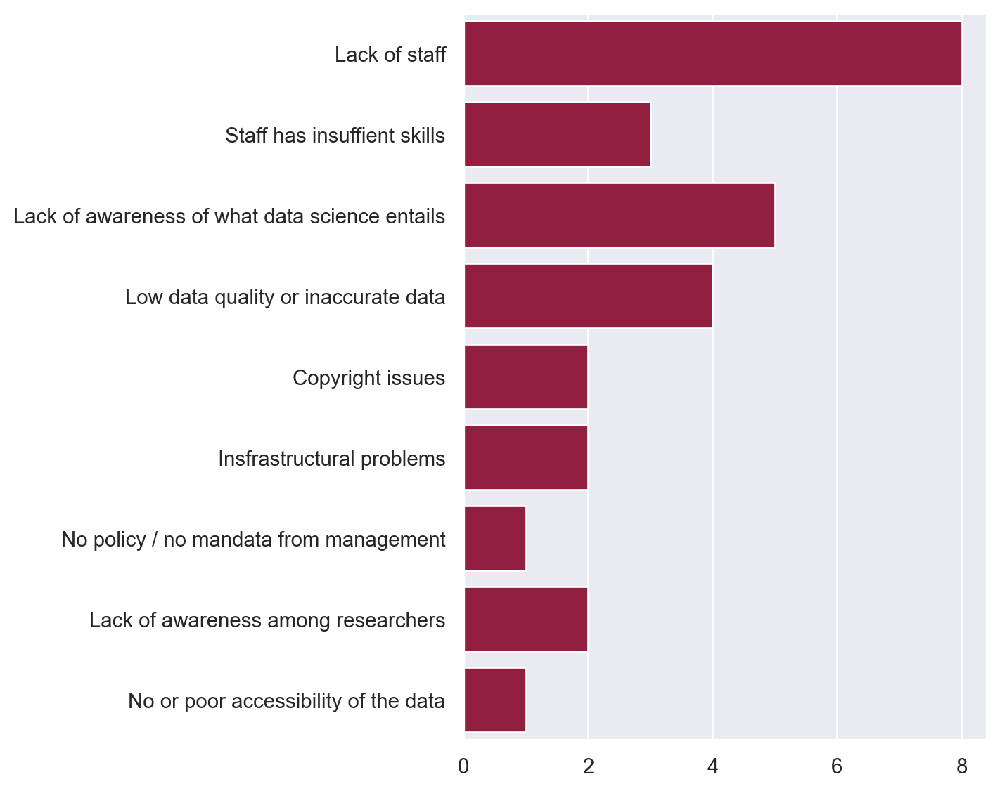

There are 109 responsesLIBER DSLib Survey
Introduction
The LIBER Data Science in Libraries (DSLib) working group explores and promotes library engagement in applying data science and analytical methods in libraries, taking into account all kinds of processes and workflows around library collections and metadata as well as digital infrastructures and service areas.
Response
The surveys have been completed in between 2022-12-02 and 2023-11-27The surveys have not been filled out completely in all cases.
0% : 7
5% : 18
10% : 19
25% : 4
30% : 16
40% : 5
45% : 6
60% : 6
70% : 5
80% : 3
85% : 1
95% : 2
100% : 17Job Title
'What is your job title?'
Institutions
'Which library are you affiliated with?'
Data Science Activities
Respondents appear to agree with the overview of data science activties. There was only one suggestion for a new category.
Student support
New category: "education support"?Library Intelligence
Describe the current data science activities in your library.
In your answers, you are invited to be as specific as possible. You are welcome to provide concrete use examples and data science methods.
If you find it helpful, you may specify when your answers relate to one or more of the aforementioned categories or divide your answers based on the aforementioned categories:
Collections as Data
Library Intelligence
Research Support
Research Intelligence
Other2. Library Intelligence - support decision-making by library management. Use data from the service Unsub to make a first pass at journal renewal and cancellation decisions. Subject specialists also weigh in with their views.
Research Intelligence - metadata of publications to understand where our faculty choose to publish. I construct a pie chart each year showing how our campus output breaks down by publisher share. How does this vary over time? Are certain publishers increasing or decreasing? This in turn is used to inform which publishers we approach or engage in negotiating Open Access agreements for our campus.
----------
3. Library Intelligence: Collection of statistics regarding user support, collections, facilities for planning, national library statistics, and annual reports.
Research Support: Data management plans, collection of data, computational literature reviews.
Research Intelligence: Bibliometric analyses.
Student support: Courses in data analytics, courses in text mining.
----------
5. Services for research data management
The University Library and Knowledge Centre provides and offers various services to the research community in order to make research data as open as possible, in line with the University's strategic goals.
Our services and support take into account the recommendations of the University and research funders, as well as national and EU-level participants in open science and research.
Research Data Management Advisory Service
In line with the strategic goal of the library – to support the dissemination of academic research results, a research data management advisory service has been developed. For the proper management of research data, we provide individual consultations and group presentations for our researchers, academics and PhD students.
The University Library and Knowledge Centre provides assistance on general data management issues, including the following: FAIR data management; compliance of research data with FAIR principles; Data management tips; recommendation of free tools; How to put the research data management plan into practice; how to comply with calls for proposals; How to use the university’s Office 365 subscription in the research process; Options for archiving research data.
Data Management Plan Consultation
The data management plan has become a mandatory element in EU, as well as in national „OTKA” and „Élvonal” proposals. The University Library and Knowledge Centre assists researchers in preparing their data management plans specifically to comply with the proposals.
Archiving Research Data In Institutional Repository
We do not yet have a working research data repository. (We store some records separately in the publication repository. We do not have a contract with a DOI provider that can issue a permanent identifier for datasets.)
Help in Choosing the Right Data Repository
The University Library and Knowledge Centre tries to help to choose the right data repository based on the most relevant proposals, funding bodies and publishers.
Other activities for research data management
We try to keep up with trends in research data management, available tools, the expectations of the funding authorities, and the needs of individual researchers. As we do not have in-house developed services, we offer existing, reliable international services to interested researchers (for example OpenAIRE services)
We also created an online educational tutorial entitled „Introduction to Research Data Management.”
----------
24. Research is supported by a research data consultant who gives advise on all aspects of handling research data. He supports the creation of data management plans, as well as the archiving and publishing of data. Furthermore, he answers all questions regarding research data management in third party (external) funding projects.
----------
28. Collections as Data
----------
30. # Collections as data
- **experimental** partaking in a national project for automated cataloging
- Involving the general public in geo-referencing of maps in our collection; using that data to improve map metadata.
- **experimental** exploring the use of the Transkribus tool for automated transciption of manuscripts.
- Making available the metadata (including images) of our art and heritage collections.
# Library intelligence
- the library plays an important role in the creation of metadata for the academic collections in the library itself, and for the output of the researchers. Where possible, the library tries to automate the acquisition of metadata by ingesting data from other providers.
- **experimental** We are working on internal projects to publish our metadata collections (possibly linked, probably open), but these projects are still in a very early stage.
- Working on ways to register different (non-traditional) types of academic output
- **experimental** exploring possibilities to attribute PIDs to elements of metadata ourselves
- **experimental** using data on usage and other criteria for semi-automated de-selection.
- **experimental** using real time data on space occupancy in study spaces.
# Research support
- RDM support: the Research Data Management team in the university library suppors researchers to make their data FAIR. The team teaches group instructions for writing data management plans; organizes support sessions for individual researchers; and provides information on a website. The library is also heavily involved in a university-wide network for research data support that further includes the IT department and legal department.
- community management: the library has invested in community management for the fields it tries to support. Most relevant for this survey, the library has roles for community management for the broader RDM community (inclusing researchers and support staff outside the library), and the open science community (involving also researcher and student advocacy groups for OS).
- Research software management: the library has recently created a role for support for FAIR research software, analogue to the support for FAIR research data.
- Library Carpentries, Software Carpentries, Code Refinery: the library organizes sessions to help fellow librarians, researchers, experienced programmers to improve their data and software skills.
- Automating the process for systematic literature reviews
# Research intelligence
- The Research Intelligence team supports research groups and departments to gather and analyze their research impact. The analysis is often used to support strategic decisions of the departments. The RI team uses data on research output and citation analysis to quantify academic impact. Increasingly, departments want to learn about the impact of their research outside of academia. Responding to this demand, the RI team uses data of mentions in the social and professional media, and in policy work to create indictaors for this type of analysis. The output in the team is mostly in the form of inteactive dashboards.
# Other (Education support)
- Use of virtual reality in education
- Using usage statistics to improve products and services (Libguides, data support, open eductaional resources)
- **experimental** partaking in a national project on learning analytics.
----------
32. As we are aware of how important a clean database enriched with rich information for Data Science is, great emphasis is placed on data quality in the creation and ongoing maintenance of metadata. This includes:
- Normalisation/disambiguation of persons and corporate bodies.
- Linking between data sets
- Enrichment of data sets with IDs (publications, persons, corporate bodies, thesauri)
- Content indexing
Actors are Cataloguing, indexing, metadata management and data quality management.
Automated Subject Indexing (pertains to Collections as Data)
- we use machine learning methods for the automation of subject indexing https://www.zbw.eu/en/about-us/key-activities/automation-subject-indexing
- the machine learning models are trained on the metadata for ZBW holdings (specifically titles and, if available, author keywords, perspectively also abstracts and tables of content; currently only for English)
- we use the toolkit Annif (https://github.com/NatLibFi/Annif) as a framework and accompany it with our own models and components in order to run our productive service for automated subject indexing (AutoSE)
Author Profiles
It is related to consumption rather than the generation of data (https://www.econbiz.de/eb/en/beta/econbiz-author-profiles).
- We rely on various data collections, such as EconBiz, GND, DBpedia, Wikidata, RePEc (CitEc), OpenCitations, OpenAlex, etc.
- Retrieving/Using through RESP API, SPARQL Endpoints, and Dump files (RDF, JSON, CSV, etc).
- Processing through several NLP methods, and applying visualizations
- Implementing ML i.e. Word Embeddings
Author Name Disambiguation
- Co-authorship analyses, subject headings and titles are included too.
- GND-ID applied as the main identifier
ChatBot using Chat-logs
Analyzing query logs of user queries in Econbiz
----------
33. Research support:
Datasets: Curation and Publication. Data Management Plan support.
----------
35. Collections as Data
-The Data management team develops workflows to discover suitable enrichments of bibliographic records from different sources. Publications from all German library networks and the Austrian Library Network are aggregated under the platform Culturegraph. Works are clustered together in bundles to enable the transfer of metadata contents such as links to authority records for persons and elements of content description from other cluster members.
Matching processes with persistent identifiers, e.g. ORCiD or ISNI, allow for the enrichment of person authority records and title records with unique identifiers.
-From 2019 on the German National Library conducted a project (EMa Erschließungsmaschine) with the aim of replacing its until then used system for automatic subject indexing. Several options were evaluated and the software package Annif was chosen as a replacement. After extensive testing and developing learning algorithms it is now used for automatic subject indexing and the automatic assignment of GND descriptors, DDC Subject Categories and DDC Short Numbers.
-Project “Subject cataloguing with AI methods” funded by the German Minister of State for Culture and the Media explores and evaluates current AI developments and their potential to produce cataloguing data automatically (https://www.dnb.de/EN/Professionell/ProjekteKooperationen/Projekte/KI/KI.html ).
-Project “PID Network Germany – Network for the promotion of persistent identifiers in science and culture” funded by the German Research Foundation (DFG). The project aims to establish a national platform for expertise and networking on the topics of persistent identification of persons, organisations, publications, resources and infrastructures in the field of digital communication in science and culture. It is a cooperation of DNB with research libraries, DataCite and the Helmholtz Open Science Office.
-GND Dashboard
As a contribution to GNDcon2.0 2021 a visualization of authority file records (Integrated Authortity File (GND)) and statistical details was created (https://deutsche-nationalbibliothek-gnd-dashboa-dashboardgnd-app-zrznpr.streamlit.app/ )
-The German Museum of Books and Writing (DBSM) conducts several data science activities on their holdings:
• Text mining: Analyzing the content of digitized and OCRed holdings
• Image processing: Tests with AI methods for analyzing watermarks
• Statistics and visualization: Analyzing meta data and representing it (e.g. GND-Dashboard)
Library intelligence
For a few years an electronic tool has been used in different departments of the library to collect statistical data on internal workflows in the library, e.g. indexing (kind, depth), number of incoming legal deposits (print, online), duration of processing incoming media.
Statistics of media orders in the reading room relating to time of orders and type of ordered medium were maintained manually until recently and frequency of visits and orders are analyzed as well.
These data are published in the Annual Report. They also serve as a basis for internal planning e.g. concerning the allocation of work and staff, quality control, provision of support for selected tasks in the process.
Item suggestions in DNB´s catalogue are implemented via a commercial tool analyzing user behavior in the catalogue (bibtip).
Research support
-With the Integrated Authority File (Gemeinsame Normdatei, GND) the German National Library and its partners provide a cross-cutting service useful to all Humanities and Social Sciences and offering central reference points and search entries with which to link information on cultural and research data. The GND is used as a tool for various Data Science activities and well established as an instrument in Linked Data context. In the GND explorer (https://explore.gnd.network/) GND entities and their relations complemented by various other information from different sources are presented in an interactive visualization.
-Collaborations with researchers in individual projects where DNB provides selected metadata content or access to full texts on the premises (e.g. Children and Youth literature, dime novels)
- Systematic approaches of a dedicated team to further the cooperation with researchers in the Digital Humanities employing different strategies as well as supporting projects with individual researchers approaching the library.
-DNBLab (https://www.dnb.de/librarylab) offers several collections of freely available data, both metadata and full texts and is targeted at Digital Humanities researchers. It also offers tutorials and webinars to teach data analysis techniques.
-DNB offers a yearly DH call (https://www.dnb.de/dhecall). Applicants can obtain access to DNB data and infrastructures to work on Digital Humanities projects focusing on DNB content.
-A DH Fellowship is awarded each year since 2022 for a period up to 3-6 months (https://www.dnb.de/dhfellowship). Researchers can work with DNB´s metadata and receive a funding.
- Participation in NFDI4Culture - Consortium for Research Data on Material and Immaterial Cultural Heritage funded under the German National Research Data Infrastructure (NFDI) framework. The consortium focuses on creating an infrastructure to preserve research data of material and non-material cultural heritage from research desciplines such as amongst others musicology, art history or theatre.
- Participation in Text+ funded under the German National Research Data Infrastructure (NFDI) framework. The consortium, comprising more than 30 partners, aims to preserve text-and language-based research data for the long term and to facilitate its widespread utilisation in academia. The German National Library is contributing open access information such as metadata and digitised tables of contents to the Text+ data corpus besides providing new opportunities for academics to work with its digital collections using the text and data mining possibilities authorised by law.
Endeavour to harvest the German-language part of Twitter in cooperation with different researchers.
----------
37. Library collection using Artificial intelligence to improve quality in research method.
----------
38. Research Support
Guides, resources, advisory and training about RDM and FAIRness, data curation through our institutional data repository, advisory in systematic searches and reviews of literature.
Research Intelligence
Bibliometric analysis for departaments, research groups and individuals. Automated document uploads to CRIS
----------
47. c
----------
51. Collections as Data
Negotiate rights for TDM in commercial products
Provide access to DH/TDM tools as part of larger packages (eg Gale Scholar Lab)
Library Intelligence
Acquisitions and renewal decisions are informed by usage data (COUNTER stats, loan statistics, Leganto stats)
Evidence based acquisition (although we are much more demand/patron driven in models)
We undertake collections analysis eg to identify items for the operational collection or items to withdraw/relegate
Assessing impact of cancellations with Unsub
[We are a bit basic with all of these things and have aspirations to do more]
Library Data Hub Perspective
Descriptive analysis of workflows eg Requests / Collection Management / Reading lists / Resolver / Star Plus
Creation and availability of automated interactive Dashboards.
Collation of key industry statistics includes, benchmarking analysis of selected institutions in key business areas
Trend analysis
Regular reporting of key statistics to help form Library Strategy
Research support
Data management plan guidance, templates, and feedback.
Research Software Engineering (RSE) (based in IT Services) team have code clinics and can be contacted to discuss any projects they could be a part of, as well as training and other guidance.
Upcoming guidance around FAIR principles, workshops and further bespoke departmental checklists - ongoing work.
Data curation: Guidance on governance and defining your data to ensure correct collection/creation, and best practice around file formats etc..
Data preservation: Help detailing storage plans (via a DMP), signposting to correct service dependent on data, ORDA (or other data/subject specific repositories at end of project).
Use of data science methods: RSE do help with code clinics, carpentry, and potential collaboration.
Guidance on licensing code and other research outputs.
----------
60. Activities related to Collections as Data:
* MINE is a collaborated project between the SUB and GWDG with the goal to offer a convenient platform for text analysis. Available via: https://mine-graph.de/. MINE is a service to offer access to various text resources and their extracted knowledge. Additionally, it also offers a workspace for users to run their analytics workflows. The aims of MINE are to offer an easy access to text resources at Göttingen Campus, or resources from partners from all over the world. MINE does not only allow searching for the already existing data and meta-data, but also enriches the meta-data with pre-executed TDM tools. The results of these tools are stored in a knowledge graph which gives new and unique ways to examine the available resources. The service is currently under development and is a joined project between the Niedersächsische Staats- und Universitätsbibliothek Göttingen (SUB) and the Gesellschaft für wissenschaftliche Datenverarbeitung Göttingen (GWDG). The technical infrastructure under development will constantly be extended with new tools and more text resources.
* Skills for working with data - targeting both librarians and researchers
* Carpentries working group, https://pad.gwdg.de/GOECarpentries#
* Book club on Data Science (reading Wickham & Grolemund, R for Data Science, https://r4ds.had.co.nz/)
* Teaching a TDM session at Humboldt University, https://github.com/njahn82/ibi_austen
* UN SDGs mining project: Identification of UN sustainability goals in research publications (R&D Department at SUBn Göttingen):
In 2015, the United Nations Member States (UN) agreed on 17 sustainable development goals (SDG) „for peace and prosperity for people and the planet, now and into the future“.
An SUB research group wants to support this endeavour by cluster research publications, based on their relevance to these SDGs. The goal is to make relevant research findable and also to strengthen access and visibility to such research.
A combination of approaches is necessary to deal with diverse challenges. First, texts must be prepared for processing. Since research publications are written in different formats, styles, semantics and even languages, this is where the first challenge begins. Policies must also be considered. A variety of licenses and conditions have to be considered. Once this is done, the content of the texts can be analyzed. A variety of methods are available for this purpose: A combination of text and data mining, topic modelling and linguistic analysis is necessary to cope with the challenges of heterogeneity of texts, different semantics and large data sets.
The group aims to compare several methods applied to a corpus that is ready for take-off.
* TextAPI (https://textapi.com/): putting the power of natural language processing into the hands of the everyday computer programmer or industrious business owner. It is surfacing this power to do text analysis, extraction, and manipulation via a language agnostic web API. This allows a developer of any walk of life whether it be PHP or C# to be able to leverage this potential.
* The Text+ consortium (https://www.text-plus.org/en/home/) will preserve text- and language-based research data in the long term and enable their broad use in science. The research data initially addressed by Text+ is divided into three domains: Digital Collections, Lexical Resources and Editions, as they have a long tradition in humanities research. They are linked to established methodological paradigms that require distinctive, yet cross-cutting practices of data creation, use, analysis, networking and curation. They are indispensable for a wide range of disciplines including, but not limited to, linguistics, literary studies, philologies including the so-called ‘small disciplines’, philosophy, and language and text-based research in the social and political sciences.
Activities related to Library Intelligence:
* Statistics about the proportion of OA publications in order to influence OA policies and collections management (also related to "Research Analytics").
* SSHOC (Social Sciences and Humanities for the European Open Science Cloud, https://sshopencloud.eu/, an EU-funded project): building a publication network pipeline as addition to an existing metadata extraction framework
* Digital Geochemistry Infrastructure (DIGIS, https://www.uni-goettingen.de/de/digital+geochemistry+infrastructure/643369.html): extracting information from research papers for a geochemical database
* Culture Cloud: detection of cross reference between objects in collections at campus Göttingen (prototype for a proposal)
* OCR-D (https://ocr-d.de/) projects (OCR-D Coordination, OLAHD, OPERANDI) to provide the requirements for data science activities on digitized books.
* Text+ (https://www.text-plus.org/en/home/), national research data infrastructure for language- and text-based research: several different TDM related tasks
* QA catalogue: quality assessment of MARC21 library catalogue to analyse metadata records and point out issues. Used in 3 libraries (U Gent, British Library, Belgian national library) to run an analysis on a regular basis (e.g. weekly) and fix the issues (https://github.com/pkiraly/metadata-qa-marc/)
* Metadata Quality Assessment Framework API: a genric tool to assess metadata quality. It is used in Europeana, German Digital Library, Victoria and Albert Museum, meemoo (Flemish audiovisual archive) (https://github.com/pkiraly/metadata-qa-api/)
Activities related to Research Support:
* GeoMapper (https://geomapper.goettingen-research-online.de/, repository: https://gitlab.gwdg.de/era-public/dataverse-mapper/), developed by the SUB R&D department
* Dataverse built-in tools (e.g. Data Explorer (https://scholarsportal.github.io/Dataverse-Data-Explorer/))
* Other research group specific data repositories: e.g. TextGrid (Digital Humanities), FOR 2432 (agriculture), Bexis (biodiversity), DIGIS (geochemistry)
* Tools developed in the context of third-party funded projects (e.g. GeoMapper); infrastructure development, application of built-in functionalities and tools (e.g. data repositories) as listed above.
Activities related to Research Intelligence:
* Analysis of big scholarly data, reports and visualisation (e.g. interactive reports, dashboards)
* Open Access Uptake in Germany https://subugoe.github.io/oauni/
* Measuring Hybrid Open Access Uptake using open scholarly data sources (in progress, Data R package https://subugoe.github.io/hoaddata/)
* metacheck, a self-assessment tool for open schoalrly data build implemented as a R package https://subugoe.github.io/metacheck/
* Scholarly Communication Analytics blog, https://subugoe.github.io/scholcomm_analytics/
* Skills for working with data - targeting both librarians and researchers
* Carpentries working group (https://pad.gwdg.de/GOECarpentries#), acrosss various SUB units, GWDG and university faculty; contribution the Carpentries community (e.g. member in Library Carpentry Advisory Group; maintainer role for LC lesson)
* Book club on Data Science
* Short course on bibliometrics / digital science at Humboldt University for post-graduate LIS students ([Slides](https://docs.google.com/presentation/d/1D-lEnMtgKSqhQUZzxgAa3kiQaYW8H0rVOkbZkO7VYmw/edit#slide=id.p))
* Session on reproducible research at Göttingen Open Science Meet-up, Oct 2020
* Other studies
* Contribution to a study on publishing reproducible research outcomes (via Knowledge Exchange Open Access Expert Group, https://doi.org/10.5281/zenodo.5521077)
* ON-MERRIT (EU project): Patent analysis on open access in innovation
* Research publications since 2020, e.g.
* Fraser, N., Hobert, A., Jahn, N., Mayr, P., & Peters, I. (2023). No deal: German researchers’ publishing and citing behaviors after Big Deal negotiations with Elsevier. Quantitative Science Studies, 1–28. https://doi.org/10.1162/qss_a_00255
* Jahn , N. , Laakso , M. , Lazzeri , E. & McQuilton , P. (2023). Study on the readiness of research data and literature repositories to facilitate compliance with the Open Science Horizon Europe MGA requirements : Final report. European commission, Brussels. https://doi.org/10.5281/zenodo.7728016
* Jahn, N., Matthias, L., & Laakso, M. (2022). Toward transparency of hybrid open access through publisher‐provided metadata: An article‐level study of Elsevier. *Journal of the Association for Information Science and Technology*, 73(1), 104–118. https://doi.org/10.1002/asi.24549
* Hobert, A., Jahn, N., Mayr, P., Schmidt, B., & Taubert, N. (2021). Open access uptake in Germany 2010–2018: adoption in a diverse research landscape. *Scientometrics*, 126(12), 9751–9777. https://doi.org/10.1007/s11192-021-04002-0
* Laakso, M., Matthias, L., & Jahn, N. (2021). Open is not forever: A study of vanished open access journals. *Journal of the Association for Information Science and Technology*, 72(9), 1099–1112. https://doi.org/10.1002/asi.24460
----------
94. We have a digital humanities project designed to help researchers take library digital collections and use them in their research (collections as data). We also teach programming languages, machine learning, statistics, data management and other workshops and offer 1:1 consultations to our research community (research support).
----------
105. Collections as Data - National Library of Serbia is on the way towards completely searchable digital library, so we are working on the extraction of the full text out of digitised textual docs, like books, newspapers, journals... Our platform for digital library is still not supporting the full text search and it should be approved in the future.
Research Support - National Library of Serbia is one of 40 trusted partners of Europeana, as the National Aggregator for Europeana, so we applied Linked Open Data in the datasets to be published on Europeana. Our platform for digital library is still not supporting LOD and we would like to change it.
----------
106. Automated subject indexing on bibliographic records of resources writtent in French using the French controlled vocabulary Rameau
Named entity recognition on newspapers written in French
----------Tasks & Responsibilities of library staff working with data science
Which department(s), team(s), or similar entities carry out data science activities in your library?2. Mostly just me. My position is split half liaison librarian, half collection analysis. I support our Collection Development Management Team with data to help make decisions.
----------
3. The activities are spread over several library units.
----------
5. Department of Publication and Research Assistance
----------
24. The department is called "Research Support Services".
----------
28. Medicine
----------
30. Data science activities are carried oiut in all departments, but are concentrated in the departments for Research Support and for Digital infrastructure
----------
31. Research Support Unit
----------
32. Academic Services; User Services; Information Provision & Access; Digital Economics Innovative; Information Systems & Publishing Technologies
----------
33. The teaching and research support manager
----------
35. '- Collections as data Data management team (part of IT department) Department for Automatic Indexing Online Publications Researchers at German Museum for Books and Writing (DBSM, part of DNB) Project team “Subject cataloguing with AI methods” Project team on NFDI4Culture Project team on Text+ Project team on PID -Research support Department for Digital Services (Digitale Dienste) hosts DNBLab with freely available text and data collections and tutorials for data analysis and takes care of DH-related activities -Library intelligence Librarians in different departments of the library, e.g. Acquisition and Cataloguing
----------
36. Depending on the activity, teams vary
----------
37. Research and administration department
----------
38. The deputy directors' unit and a cross-cutting working group.
----------
39. Business Administration, Computer Science, Economics
----------
51. Scholarly Communications Team, RSE, Content & Collections, Library Business Services, TSS, Library Digital Services, Faculty Engagement Team
----------
60. Depending on projects and actual acitivies, data science relevant topics and projects can take place in the respective departments. These includes e.g. the department "Research and Development" and "Digital Library", but are not limeted to. Coordination takes place in cross-cutting working groups and service groups. In addition, there is a close connection to the Chair for Scientific Information Analytics (Prof Bela Gipp, Gipplab, https://gipplab.org/), which offers a direct link to the institute and to research. Furthermore, the Campus Institute Data Science (CIDAS, https://www.uni-goettingen.de/de/634473.html) is a central hub at the Campus Göttingen, where also the library is active.
----------
105. Digital Library Department
----------
106. Department of technology
----------Describe the staff responsible for data science activities.
For example:
What is their background?
What are their qualifications and training?
What are their specific roles in the organization?2. I have a Bachelors of Science in Electrical Engineering and spent 10 years as an engineer at Intel. I also have a Masters of Library and Information Science. Collection Analysis is something that I have gradually added to my position starting in January 2020. I am mostly self-taught through webinars, Lynda.com, LinkedIn Learning, edX, Medium, and other resources.
----------
3. Background: Different university backgrounds, librarians.
Qualifications and training: Some people have qualifications from their educational background, others have studied data science out of a personal interest, some have taken courses in data science or participated in workshops.
Roles: They work as librarians or data specialists.
----------
4. The Centre for Digital Scholarship employs two data scientists. Both have a background in Computer Science. One data scientist also holds a PhD in Digital Humanities / Computational Literary Studies. The research data engineers offers support to researchers who want to make use of data science methods in their research. They also organise trainings and workshops on programming and on general data science skills.
----------
24. 1. Department leader. Role: communication with the heads of the universitys administration, coordination of the department, reporting. Background: PhD in educational research. M.A. in library science.
2. Research data consultant: advice for researchers, training e.g. data management courses, communication with research groups. Background: M.A. in german linguistics.
----------
28. Librarian, small training,
----------
30. # background
- research background (diverse fields, mostly not limited to humanities and social sciences)
- library & information science
- IT
# Qualifications
- MSc, PhD
- field-specific training (eg, many with LIS background with additional training for IT tasks)
# Roles
- Teaching
- development & maintenance of IT systems
- Community management
- program coordination & project management
----------
31. People with experience in several librarian aspects.
We have done training in DMP, data stewardship, data visualization, Open Access (including Open Data), etc.
----------
32. Computer Scientists
Librarians
Academic Librarians
PhD Students
Post-Docs
Profs
----------
33. They received specific training in data management.
----------
35. '-Collections as data
Team data management: librarians, metadata managers, information scientists,one computer scientist
Department for automatic Indexing Online Publications: librarians, computer scientists
Project team “Subject cataloguing with AI methods”: computer scientists
German Museum for Books and Writing: historians, media scientists, librarians
-Library intelligence: librarians
-Research support Department for Digital Services (Digitale Dienste): librarians, metadata specialists
Five staff members are involved in the activities within the German National Research Data Infrastructure (NFDI) framework: One acting as Lead of Task Area Collections in the Text+ consortium, one coordinating the Task Area Collections as well as the activities of the German National Library within the NFDI, another is responsible for the activities of the Integrated Authority File (Gemeinsame Normdatei, GND) in the Text+ Task Area Infrastructure and Operations, one is charged with representing the GND in the other NFDI consortia in the Humanities and Social Sciences and one develops the GND services for data sciences purposes on a strategic level.
A consultant on strategies in the field of Digital Humanities is positioned close to the executive management. He develops the strategy in the field, establishes a network of relevant actors in academics and GLAM institutions, organises cooperations with other libraries and universities and occasionally also teaches university courses.
----------
37. Library staff are well aware of new methods of library key activities.
----------
38. Background in Library Science. Specialized training in Open Science and some of them in Research Data Management.
----------
39. Master Degree in Business Administration
----------
51. Research Data Steward, previous work around clinical trials research and acquisition and pre-processing of sensitive health data for research projects, MPH.
----------
60. Management and research is typically led by permanent staff, and research, data processing and analysis is conducted by project staff.
Involved are e.g.
* management and staff from various library units: Digital Collections, Research & Development, Knowledge Commons
* experts on TDM, metadata, software development (both from library and cooperating organisations), scholarly communication analytics
* student assistants
Most activities are based on third-party funded projects and/or working groups based in the library (SUB, GWDG).
Moreover, there are also private research topics, e.g. follow-up of a dissertation (published as: https://doi.org/10.13140/RG.2.2.33177.77920).
----------
105. The staff in the Digital Library Department is not only dealing with data science activities. They are also involved in metadata management and digitisation workflow.
----------
106. One developer in the team.
Background in mathematics
Has worked as a developer for more than 20 years
In the library world for 8 years
No specific training in data science or in library science
----------Who does the library collaborate with, internally or externally to the institution, in carrying out data science activities?2. Involved with the ESAC Data Analytics Working Group, though haven't met recently. Mostly work with colleagues on Twitter or vendors with specific questions.
----------
3. There are networks of people working with data science inside the library and between libraries.
----------
4. Internally: with curators and project managers of the Special Collections department; the library's IT department, the Projects and Innovations department and subject librarians
Externally: Individual researchers, the institutional Open Science programme, The Grants office (LURIS), the university's IT department, data stewards at Faculties
----------
5. internally collaborate: with Partnerships and Services Marketing Department and Library Leadership.
externally collaborate: with University Information and Innovation Directorate and Vice-Dean of Science and Rector
----------
24. The position of the Research data consultant is currently part of the libraries staff.
----------
28. me
----------
30. '- Other academic libraries, nationally & internationally
- Faculty support staff (eg faculty data managers)
- IT dept in university
- Faculty & department management (eg, joint development of indicators/dashboards for research evaluation)
- External parties, eg publishers (Elsevier!) or other companies with specific expertise
----------
31. With the CSUC consortium.
----------
32. Local universities
International Universities
Other libraries nationally and internationally
----------
33. The teaching and research support coordinator
----------
35. '-Collections as Data
Internally amongst the departments e.g. amongst IT department and the Department for Automatic Indexing Online Publications or the Department for Acquisition and Cataloguing
With other libraries in Germany e.g. via the German Regional Library Networks or single libraries working on similar topics
The Integrated Authority File (GND) is cooperatively managed by the German National Library, all library networks of the German-speaking countries and their participating libraries, the German Union Catalogue of Serials, and many other institutions. Its aim is also to extend the existing cooperation between libraries further e.g. other GLAM institutions or to the public in general.
The project “Subject cataloguing with AI methods” strives to create a Network for machine-based cataloguing processes to further the exchange of knowledge and experience in this area (Network for machine-based cataloguing processes).
DNB engages in large infrastructure projects such as in the German National Research Data Infrastructure (NFDI) framework. As project partner e.g.in Text+ and NFDI4culture, but also as participant in NFDI4objects and NFDI4memory. In this way, cooperations with numerous universites, institutions of cultural heritage and research facilities in Germany are established and strengthened.
-Research support
To promote the services and research support offered by DNB contact to research insititutions is maintained and increased:
-universities
-professional societies
----------
37. Research head and chief information officer.
----------
38. Internally, with the Research Unit and the Training Unit of the university. Externally, with other university libraries through various regional and state working groups in different library organizations.
----------
51. IT Services and RSE, research support activities are open to all staff and students.
Notionally, the big archival suppliers - Gale, Adam Matthew, ProQuest - help as to allow the collections to be used as data
Jisc do analysis around big deals
Library Hub and other metadata providers
Sheffield AI / Turing
University of Sheffield Computer Data Science Department
----------
60. Collaborations include:
* university research groups
* GWDG, computating and IT competence center
* external cooperation partners in 3rd party funded projects
* UC Davis for text mining collaboration on UN SDGs
* University of Oxford for MINE
* Dataverse community
* DARIAH community
* Text+ community
* National Research Data Infrastructure Germany (NFDI)
* Campus-Institut Data Science (CIDAS)
* German Centre for Higher Education Research and Science Studies (DZHW), GESIS Leibniz Institut für Sozialwissenschaften, Universität Bielefeld
* German Competence Center for Bibliometrics
* rOpenSci community (https://ropensci.org/community/)
----------
105. National Library of Serbia is cooperating with the Mathematical Institute of the Serbian Academy of Sciences and Arts, SERBIA (as the technical partner for digital library), Semantika, SLOVENIA (as the technical partner for the aggregator) and Europeana, THE NETHERLANDS/EU
----------
106. We collaborate mostly with private companies. Also with publicly supported foundations that provide IT services for universities.
----------Challenges
What are the challenges faced by the library in carrying out data science activities?
These can be any barriers or difficulties in implementing data science activities.2. Lack of staff. It's only me and I have a list of ideas that I'll never have the time to get to. Hard to communicate what exactly I do. Often called "magic" here.
----------
3. It takes a lot of time to get the qualifications to develop data science activities.
----------
4. CapacityL: there is a high demand for support of this nature, while our centre only employs two data scientists. Projects tend to be time-consuming. In some cases, researchers lack a good understanding of techniques. In such situtations, quite some time is needed to explain concepts and techniques. Researchers often work with with materials that cannot easily be searched using data science techniques (e.g. texts in non-Western scripts, documents which cannot be OCR'ed well, historical texts). There can also be copyright issues.
----------
5. lack of physical back-up storage, Lack of processes and systems: When data is gathered from many sources, inconsistency in the data is unavoidable. Inadequate data management processes and systems contribute to inaccurate data. As a result of the insufficient amount of data, the data is of poor quality and does not fulfill the criteria.
----------
24. The research data consultant is employed on a fixed term contract because he is part of a project with a limited duration.
----------
28. xx
----------
30. Lack of time and skills (lots of development in the field, difficult to keep up to date); Lack of useful data (Third-party databases are useful but often have gaps in their data due to specific focus (eg focus on North-America); Much of the current manual work is very diverse and difficult to make uniform and therefor to automate.
----------
31. Lack of awareness, lack of institutional policies, lack of training, etc
----------
32. Computer scientists’ resources; Metadata expert resources; Data quality or percentage of data with specific IDs (GND-ID)
----------
33. The researchers are not used to sharing their datasets.
----------
35. '-Data quality (unstructured data, missing data, mistakes) -Insufficient data (quantities) -A major challenge is certainly the limited access to our library’s collection. The Law on the German National Library allows access to the collection only on site – including digital material. Only the metadata can be provided outside the library’s facilities. Finding ways to allow remote research on our collection is a desideratum.
----------
37. Lack of skilled manpower
----------
38. Lack of human resources and budget.
----------
51. Generally, the skills - especially the high-level skills - are concentrated in too few people, and elsewhere it is not articulated in people’s job descriptions Resource availability - low numbers of staff capable of data science activities Up-skiling of staff to aid with their understanding of opportunities/capabilities of AI Data education (cleaning, describing, validating, predicting …. Prior to AI) ! Research support - Engaging with academics doing research and encouraging them to change working practice to improve Research Data Management approach. Timely intervention so that practices are done at the correct time in the research lifecycle.
----------
60. * TDM activities: An in-house working group has started to address the complex task of creating a detailed overview of licenses (institutional, national, Alliance of German Science Organisations, other) and respective archiving and TDM rights (user groups, content formats, metadata formats, etc.). Based on these conditions local TDM services will integrate access to these collections. * General: Many opportunities to engage and expand activities but underfunded resp. short-term funding via third-party projects.
----------
105. A general lack of staff, especially IT professionals, but also the lack of support from the authorities at all levels.
----------
Does the library have ways of addressing legal or ethical challenges related to data science activities?2. Not really
----------
3. We give consideration to the rights and terms when we collect data. Ethical aspects are considered when we make bibliometric analyses.
----------
4. The library has a 'Copyright Information Point' which can advise on these matters. In some cases, additional budgets can be allocated to gain access to specific collections.
----------
5. The university has a legal department, we work with them.
----------
24. We act conforming to the German copyright law and also are aware of the CARE principles.
----------
28. xx
----------
30. Legal: legal & privacy officers available at university.
Ethical: no structured method, issues discussed as they become relevant
----------
31. Library has some resources, but we send the other things to the legal department of the university.
----------
32. Legal department, but sometimes really difficult to find solutions (e.g. what can we do with abstracts…?)
----------
33. Yes. The university has a Legal Office and a Data Protection Officer. Both of them help us in these issues.
----------
35. Metadata can be used freely according to a CC0 license, free online publications and digitized sources with expired copyright can be used freely, most other content print and digitized can only be viewed and analyzed on the premises of DNB.
No personal data of users are collected in the statistics used for library intelligence purposes.
The involvement in the Text+ consortium within the German National Research Data Infrastructure (NFDI) gives the German National Library (DNB) the opportunity to engage in finding ways to allow research on material protected by copyright, e.g. by provoding derived text formats, as this is a major issue in the work programme. Another milestone is an „Assessment of the impact of the Directive on Copyright in the Digital Single Market and its German transposition on the legal status of Collections“. The DNB is also involved in the NFDI wide section Ethical, Legal and Social Aspects (ELSA).
----------
37. Yes
----------
38. We send them to the university's Legal Advisory Service.
----------
39. No
----------
51. Contact with the University Data Protection Office around governance for data collection/storage.
Jisc negotiate the majority of our license terms
Training is provided in relation to personal identifiers and the wider context of ethical issues when using data to produce statistics.
----------
60. * Licensing and rights management (for content, user data), e.g. TDM activities build on diverse licenses for collections
* Access for users to the outcome of mining (e.g. graph with keywords) but not necessarily to the full text
* Software licensing (e.g. GeoBrowser)
* For scholarly communication analytics the focus is on open data sources. Proprietary bibliometric data sources are accessed through a dedicated data infrastructure and governed by a SLA.
----------
105. There is no right support for addressing legal challenges. And ethical challenges are not on the table yet.
----------Summary
Not really
The library has a ‘Copyright Information Point’ which can advise on these matters. The university has a legal department, we work with them. legal & privacy officers available at university. sometimes really difficult to find solutions (e.g. what can we do with abstracts…?) The university has a Legal Office and a Data Protection Officer. We send them to the university’s Legal Advisory Service. Contact with the University Data Protection Office around governance for data collection/storage. Jisc negotiate the majority of our license terms.
No personal data of users are collected in the statistics used for library intelligence purposes. Training is provided in relation to personal identifiers and the wider context of ethical issues when using data to produce statistics.
We give consideration to the rights and terms when we collect data. Ethical aspects are considered when we make bibliometric analyses. We act conforming to the German copyright law and also are aware of the CARE principles.
Ethical: no structured method, issues discussed as they become relevant
The involvement in the Text+ consortium within the German National Research Data Infrastructure (NFDI) gives the German National Library (DNB) the opportunity to engage in finding ways to allow research on material protected by copyright, e.g. by provoding derived text formats, as this is a major issue in the work programme. Another milestone is an „Assessment of the impact of the Directive on Copyright in the Digital Single Market and its German transposition on the legal status of Collections“. The DNB is also involved in the NFDI wide section Ethical, Legal and Social Aspects (ELSA).
Funding
How are the data science activities typically funded?2. No additional or special funding beyond my regular salary
----------
3. Internal funding.
----------
4. We are often involved in externally funded research projects. Our activities can often be funded using these research budgets. In other cases, we are funded by the library.
----------
5. from university or library budget
----------
24. Ministry for Science of the federal state.
----------
28. ..
----------
30. '- library budget
- university funding for projects
----------
31. We use the university resources. Researchers have budgets from the university or from other funders (institutional funders, usually).
----------
32. Internal budget, personnel
Projects/third-party funding
----------
33. With European projects or the National Research Agency.
----------
35. internally, sometimes projects funded by German Research Foundation partly under the German National Research Data Infrastructure (NFDI) framework, the German Research Foundation (DFG) or the commissioner of the federal government for culture and media
----------
37. From grants provided by research projects
----------
38. As with the rest of the activities, from the Library's normal budget.
----------
39. governement
----------
51. Research council funding or core staff.
----------
60. Internal resources combined with third-party funding (national, European)
* Internal funds, based on regular staff and temporary staff
* Third-party funding: e.g. TextGrid is cofunded by the German Ministry of Education and Research (BMBF), CLARIAH (DARIAH-DE, CLARIAH-DE) funded by BMBF
----------
105. Data science activities are funded through the annual budget coming from the Ministry of Culture / Government. Additional funding is coming from European projects.
----------Summary
Three main sources of funding are mentioned:
- Regular salaries (library budget)
- University funding for projects
- Involvement in externally funded research projects / grants provided by research projects / Funding by research councils (Ministry for Science of the federal state, EU, National Research Agency, German National Research Data Infrastructure (NFDI) framework, the German Research Foundation (DFG), Commissioner of the federal government for culture and media)
Ambitions
What library data science activities are planned (if any) in the future?2. Automating the publishing profiler in Python, automating a name lookup in the staff directory to see who an author is (department, college, level).
----------
3. We work continuously on developing data science skills among the library staff.
We are in contact with the faculty on how to support them with teaching.
----------
4. Development of courses on Machine Learning; Organisation of Summer School on digital scholarship; Involvement in research projects working with Linked Open Data; Setting up a 'data foundry' to facilitate the use of 'Collections as Data'; Setting up projects in the field of research intelligence
----------
24. 1. Evaluation of the activies and the needs by using data science method, e.g. web analytics of our discovery system.
2. Supporting workflows and processes like cataloging with AI and similar methods.
----------
28. ..
----------
30. '- Improved automated collection of currently non-standard research activities (eg media appearances)
- automated cataloging/attribution of meta-data
- decreasing dependence on few large data providers
- see **experimental** tag in list of DS activities
----------
31. To increase our data science training for training and helping our users. If it is possible, we would like to train students for preparing them for future (and present).
----------
32. Focusing on the author's name disambiguation and clustering
Identifying duplicate publications and grouping them into one instance
Creating extensive author profiles using the existing library and non-library resources
Enriching bibliographic data with (more) PIDs and other information such as citation metrics, search data, etc.
Working towards setting up a Knowledge Graph and linking/making use of any existing ones Wikidata, OpenAlex, OpenAir, etc.
----------
33. To collaborate with CSUC (Corsortium) in improving our Data Reposity, Training Session for PhD Students and Researchers.
----------
35. '-Expand the use of full texts e.g. in automatic processes to automatically create content descriptive information
-Experimenting with machine learning techniques to disambiguate frequent names
-Take over metadata elements from manifestation clusters
-Explore machine learning methods for subject indexing
-Include other external data sources in analyses (Wikidata, CrossRef etc.)
----------
37. Making a knowledge hub for research work
----------
38. Continue with the existing ones, expanding to new services if we have the human resources to do so.
----------
51. FAIR guidance being created.
Planning work with Computer Science Department that initiates projects in which students can become involved in areas such as text processing / chatbots (Decision Trees) and deploying Machine Learning.
----------
60.
* Establishing collaborative research with professor and research lab on scientific information analytics is in early stages (GippLab, https://gipplab.org/).
* Open scholarly data: Opening up analytical data to partners (research and libraries)
* IaaS to govern use cloud-based big data analytics services in collaboration with the GWDG
----------
105. National Library of Serbia published the Serbian translation of the book OPEN A GLAM LAB in May 2023. Launching a library lab is planned for the future.
----------Anything else to add?4. In the Netherlands, topics such as these are also discussed in the UKB Digital Scholarship working group.
----------
30. I have used a very broad definition of data science, including more social/community related tasks that are important to increase acceptance of the more 'technical' tasks.
----------
37. How I can join in the projects conducted by LIBER,?
----------A number of respondents had indicated that they may be contacted if we need further information. The mail addresses are in the survey results.